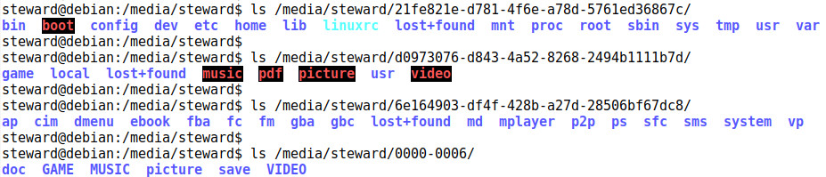

多虧RS97掌機使用MicroSD作為儲存空間，這才使得一般使用者可以更方便分析系統，當然也更方便破解系統，司徒就是因為這點才可以順利移植客製系統，而這張MicroSD究竟藏了什麼東西呢？可以經由如下分區得知：
Command (m for help): p Disk /dev/mmcblk0: 3.7 GiB, 3980394496 bytes, 7774208 sectors Units: sectors of 1 * 512 = 512 bytes Sector size (logical/physical): 512 bytes / 512 bytes I/O size (minimum/optimal): 512 bytes / 512 bytes Disklabel type: dos Disk identifier: 0x00000000 Device Boot Start End Sectors Size Id Type /dev/mmcblk0p1 16384 528383 512000 250M 83 Linux /dev/mmcblk0p2 528384 712703 184320 90M 83 Linux /dev/mmcblk0p3 712704 774143 61440 30M 83 Linux /dev/mmcblk0p4 774144 7653375 6879232 3.3G b W95 FAT32
P.S. 最前面的8MB就是U-Boot和Kernel檔案
MicroSD目錄如下：
